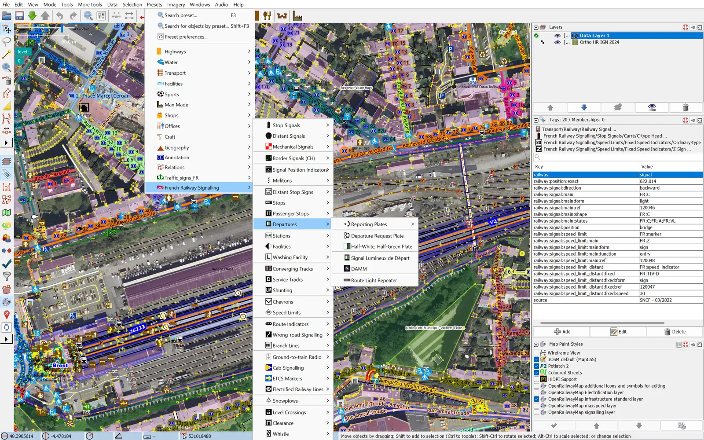

This page hosts the French Railway Signalling presets and validator rules for the JOSM editor. The presets help map the railway signalling and infrastructure specific to France in OpenStreetMap / OpenRailwayMap; the validator rules report French signals whose tagging does not follow the Tagging in France scheme.

French Railway Signalling from Available presetsThe validator rules are generated from the Tagging in France documentation, reviewed, and published together with the presets. On a French signal, they report:
railway:signal:* keys that the documentation does not describe;FR:m instead of FR:M (values are case-sensitive).Values of other schemes, such as Swiss (CH-FDV:) or ETCS (ETCS:) signals, are not checked. JOSM keeps the rules up to date by downloading them again from this site.
French Railway Signalling in Available rules and click the Arrow button to add it to Active rulesRules URL: https://noeldev.github.io/FrenchRailwaySignalling/French_Railway_Signalling.validator.mapcss